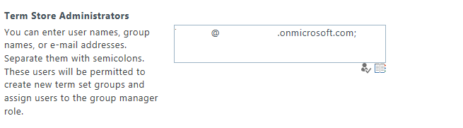

Learn how to create a taxonomy group in a provider-hosted app for SharePoint.
Provided by: Thomas Mechelke, Microsoft Corporation
This sample shows you how to add a taxonomy group to the term store of a SharePoint 2013 site with a provider-hosted app for SharePoint. This app works only for users who are administrators of the site's enterprise metadata service.

Prerequisites
This sample requires the following:
-
An Office 365 Developer Site
-
Visual Studio 2012 and Office Developer Tools for Visual Studio 2012 installed on your development computer
Key components
-
TaxonomyApp project, which includes the AppManifest.xml file that contains the registration information for the provider-hosted app for SharePoint.
-
TaxonomyAppWeb project, which contains:
-
Pages\Default.aspx. The page that displays the app's user interface.
-
Web.config. Stores the client id and client secret.
-
Configure the sample
Follow these steps to configure the sample.
-
Open the TaxonomyApp.sln file in Visual Studio 2012.
-
In the Properties pane, change the Site URL property. It is the absolute URL of your SharePoint test site collection on Office 365: https://<my tenant>.sharepoint.com/sites/dev.
Build and deploy the sample
Before you run the sample, you'll need to make sure that you are an administrator for the enterprise metadata service of your site.
To make yourself an enterprise metadata service administrator
-
Navigate to the home page of your Office 365 Developer Site.
-
Click on the Admin dropdown menu in the upper right corner of the page. Select SharePoint.
-
Click on the term store link in the left pane.
-
Enter the user id and domain that you created for your developer site in the Term Store Administrators box, as in Figure 2.
Figure 2. Make yourself a term store administrator
 -
Press F5 to build and deploy the app.
-
Choose Trust It, and wait for the start page of the app to load.
Run and test the sample
-
In the web browser, click on the Create Plant Taxonomy box to create the new taxonomy group.
-
Click on the Display Plant Taxonomy box to see the new taxonomy group.
Change log
|
Version |
Date |
|---|---|
|
First version |
July 2013 |